A more composed workspace.
QualifyFlow’s real M1 screens, before and after the premium product refinement. Cool supporting surfaces frame white working groups; typography, controls and operational rows share a consistent hierarchy. All captures use isolated synthetic data.
Client Portal
Service arrangement, exact status and activation responsibility precede company profile, scoped locations and authorized actions.
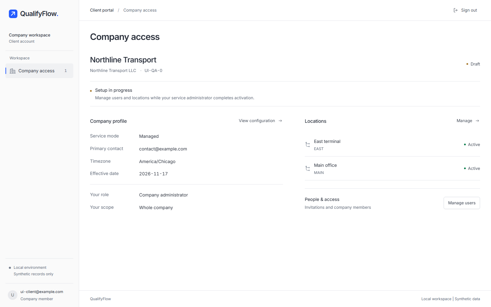
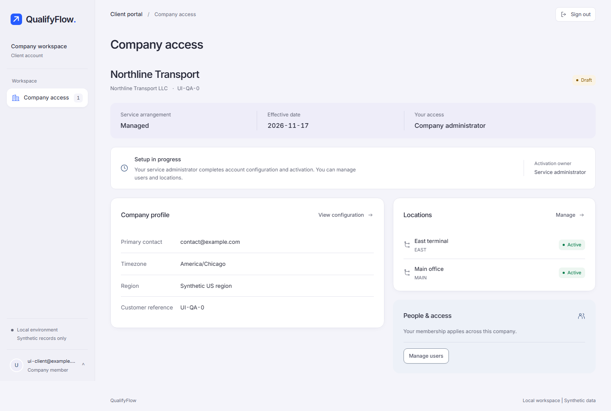
Operations Console
A continuous directory with existing search, status and sort controls. Counts are persisted test records; browser runs can add additional synthetic companies.
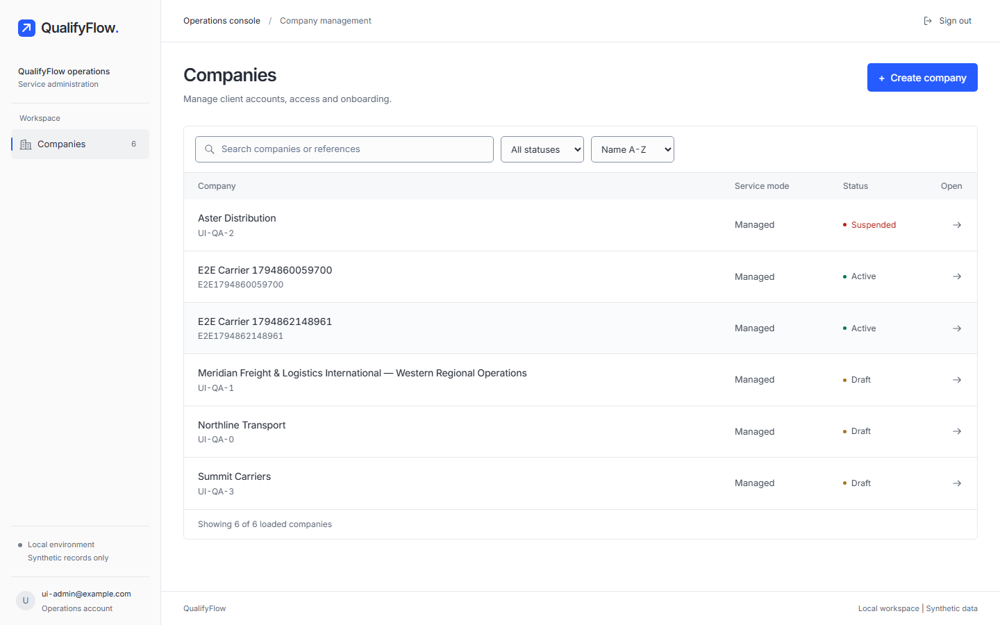
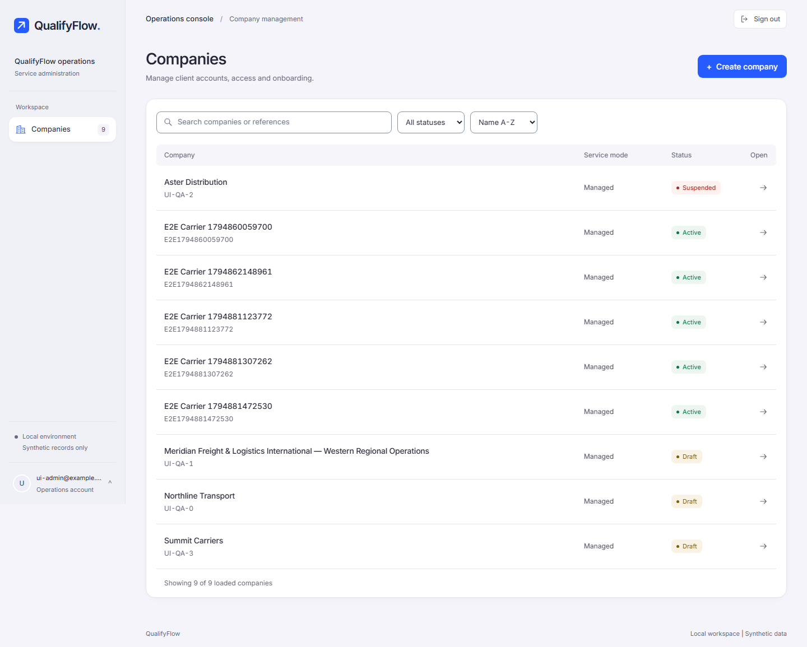
People & access
Existing roles, scopes, invitations and revocation keep their real behavior. Grouped surfaces separate membership review from inviting a user.
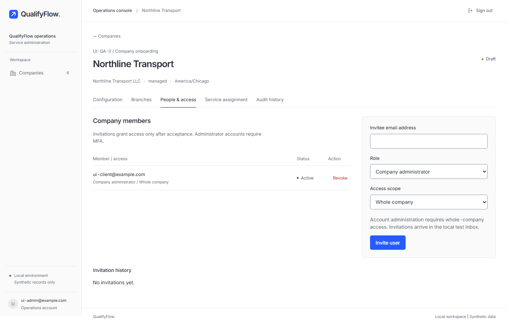
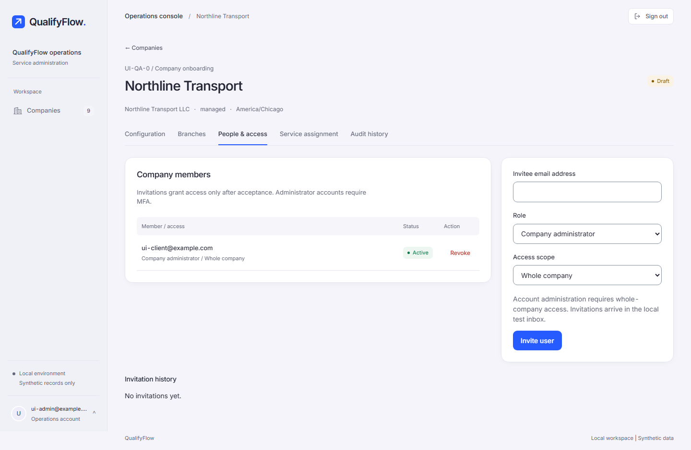
Sign in
The same email, password and authenticator flow, with a focused form and a calmer frame.
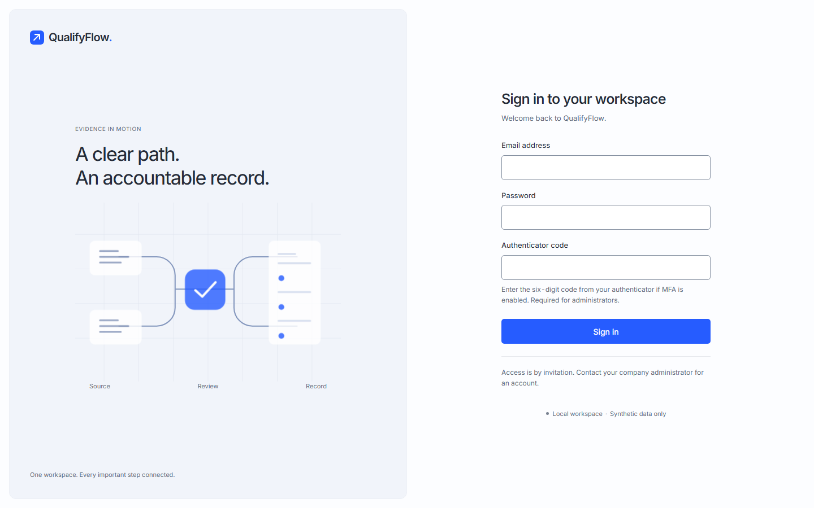
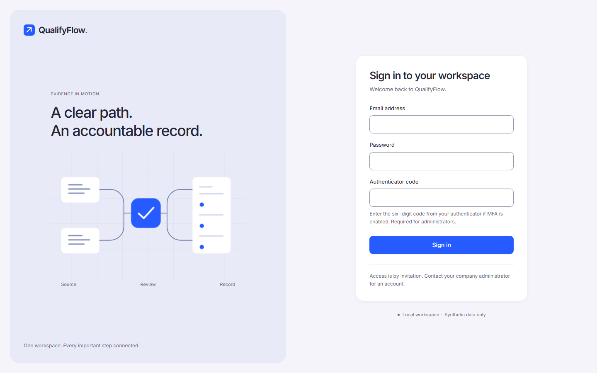
Phone states · 375px
Real records, wrapped long names and branch-scoped viewer access. No fake dashboard modules fill the page.
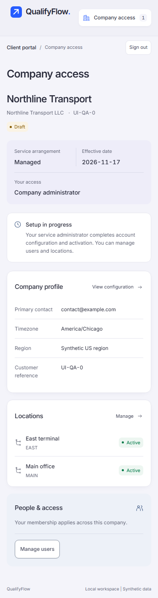
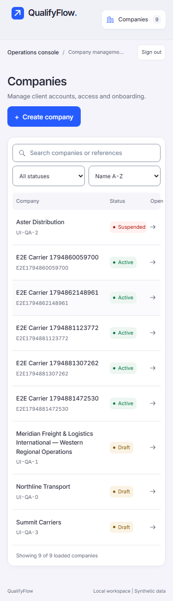
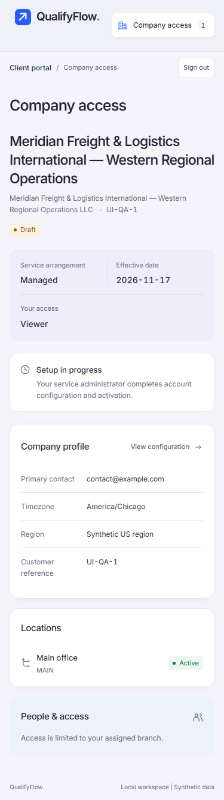
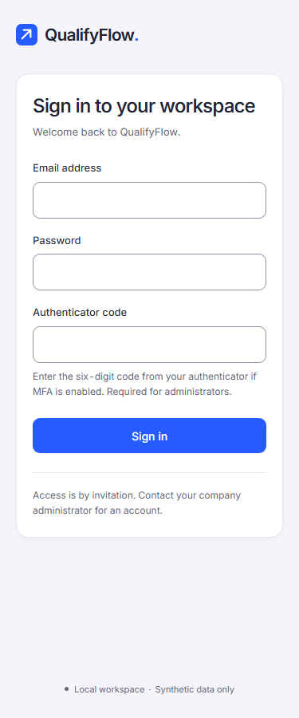
Inspect the states
Tablet configuration · Active record · No company access · Real delayed detail · Pending sign-in · Rejected sign-in · Full account identity


Original references were studied for surface hierarchy, administrative precision and typography. Their brands, photos, navigation and charts are not copied into the app. M2 remains the next engineering milestone.